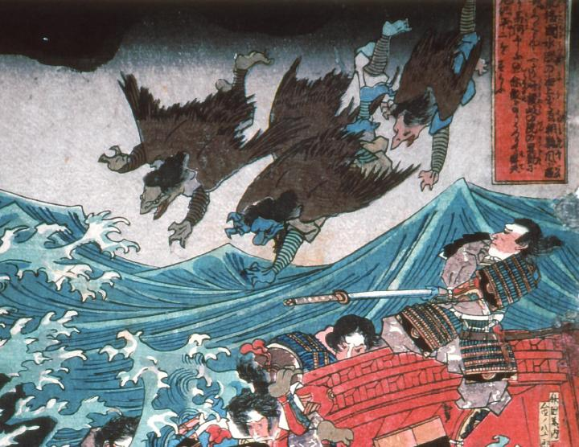

為朝の危機に駆け付けた崇徳院の眷属たち。みな山伏姿の烏天狗である。背中には大きな翼があり、海上を飛行している。肌の色はそれぞれ異なり、灰色、青、赤、中央の1体だけは鼻が大きく伸びており、両の2体は嘴である。
著作者：歌川国芳／出典：親書誌：A5_hermitage_0007：肥後国水俣の海上にて為朝難風に遇ふ；ヒゴノクニミナマタノカイジョウニテタメトモナンプウニアウ／日付：2011／資源識別子：A5_hermitage_0007_0001_0000
Copyright (c)2010- International Research Center for Japanese Studies, Kyoto, Japan. All rights reserved.